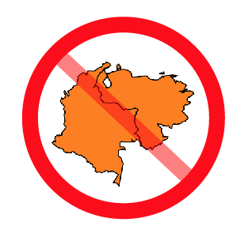

(Depending on your attitude, they might not be "games" so much as "puzzles", or maybe "tedious bureaucratic exercises", but I promise I'm going somewhere with this.)
You run a successful catering service, dispatching teams to deliver, set up, and serve meals at events all across the city. You arrive at the office one morning, excited to see a full line-up of events happening throughout the day.
Now it's time to assign events to teams. Your teams work hard and move fast, but a team can't be in two places at once. So, given that constraint, your goal is to pull off the schedule using as few teams as possible. Hence your nickname — the Frugal Caterer. Get used to it.
Drag the events below to move them between teams. See if you can come up with the smallest possible number of teams.
You are a master mapmaker, compiling the next great atlas of the world — continent by continent. First up: South America.
After a few months of work, you've come up with a killer outline. It looks like:
It looks alright, but it's definitely missing something. Color! Not only does color class up any drabby old atlas — it also makes it easier to tell countries apart as you read a map.
So your next step is color in the map.
| You'd like to use as few different colors as possible, since that makes the map look prettier, and the printing cheaper. (You are the Frugal Cartographer, after all.) | But you still need to make sure that neighboring countries are always shaded with two different colors, or you'll confuse your readers and defeat the purpose of coloring in the first place. |
 |
Use the palette below to color in the countries. See if you can color the whole map with the smallest possible number of colors.
As coy as I'm trying to be here, I don't think I'm fooling anyone. I wouldn't be bringing up these two games if there weren't some connection between them. You may have started noticing a connection yourself…
In both cases, you're trying to do something as frugally as possible, while following certain rules. And the rules turn out to be surprisingly parallel:
I've colored in the parts which match up in the two descriptions.
| The objects | events | countries |
| The groups | teams | colors |
| Pairs of objects which cannot be grouped together | overlapping events | neighboring countries |